Открытие Развилок
Развилки открываются, когда игрок дошёл до третьей главы, и работают со следующего забега. Сейчас игра об этом молчит. Есть два момента, где можно сказать: когда открылось и когда игрок впервые видит развилку на карте неба. Для каждого момента выбери вариант. Можно взять оба момента, можно один.
Снимки сделаны в настоящей игре: телефон, ландшафт телефона и ПК.
Момент 1. Открылось
Игрок впервые дошёл до третьей главы. При старте первой ночи главы игра говорит, что в следующем забеге его ждёт новое.
A1Праздник, как «Новое созвездие!» · рекомендую
Лента над небом в том же стиле, что открытие созвездия: «Открыто. Развилки», два значка пути и одна фраза. Игру не останавливает, уходит сама через пару секунд или по касанию. Картинка сразу показывает, что будет выбор из двух путей.
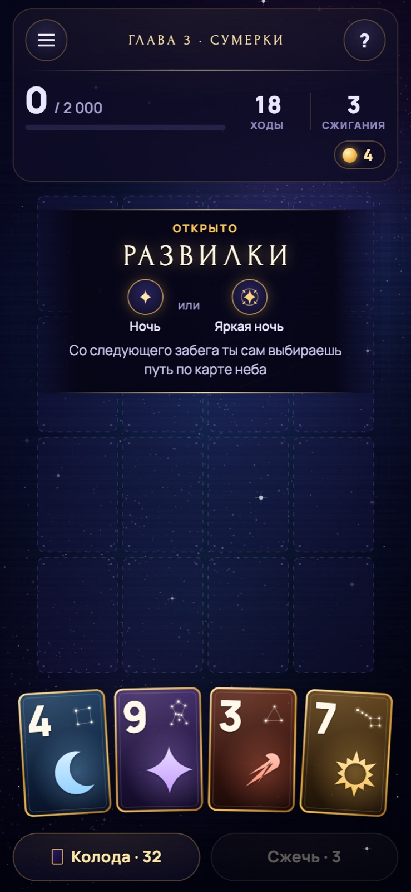
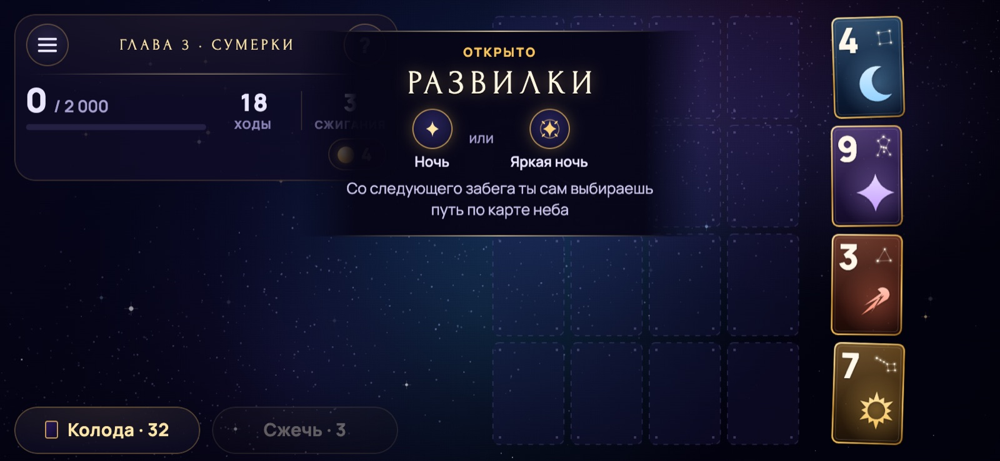
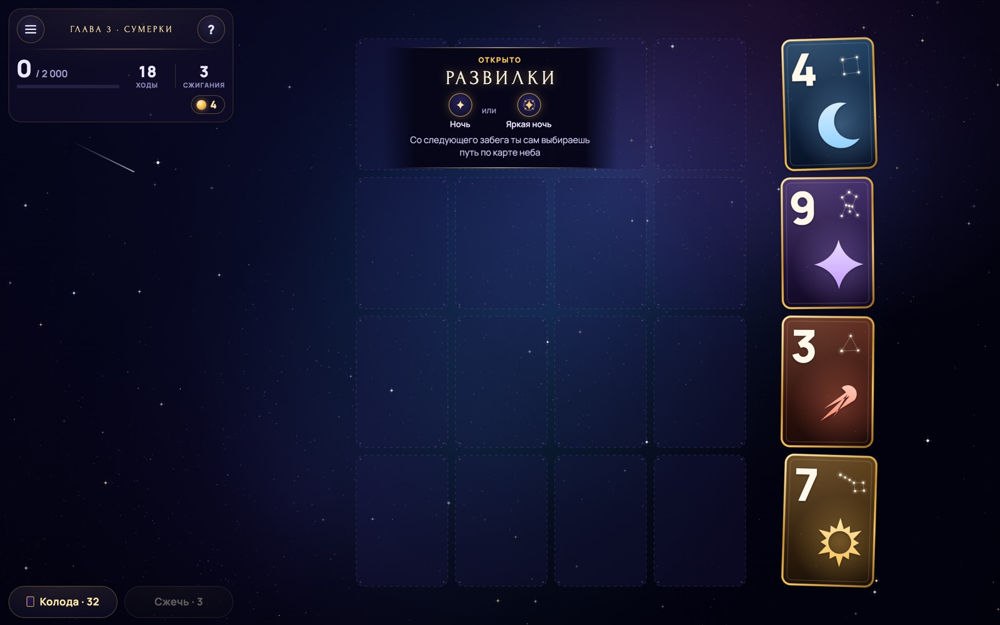
A2Короткое сообщение
Обычное всплывающее сообщение игры одной строкой. Тише, но его легко пропустить, и картинки нет.
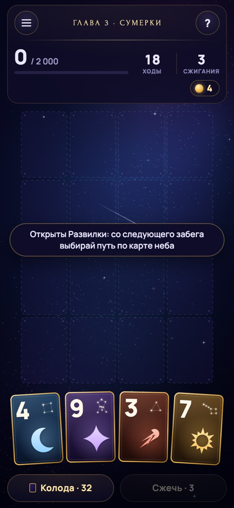
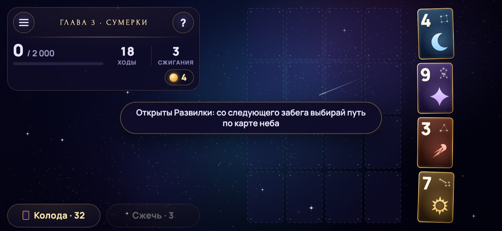
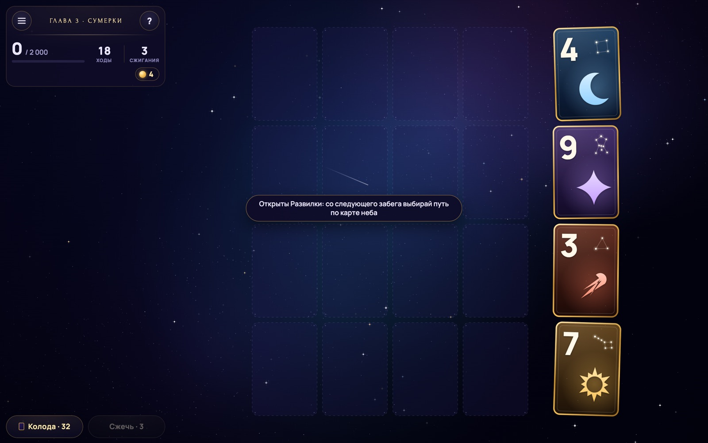
Момент 2. Первая развилка на карте
Следующий забег: карта неба впервые показывает выбор. Один раз за всё время.
BОкно на карте неба
Окно во весь экран, как у Кометы и Телескопа: название лентой, два пути с объяснением и кнопка «Выбрать путь». Объясняет понятнее всего, но останавливает игрока и закрывает саму карту.
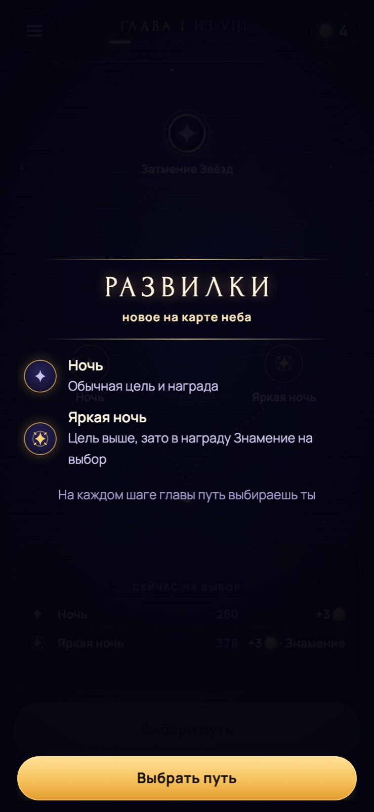
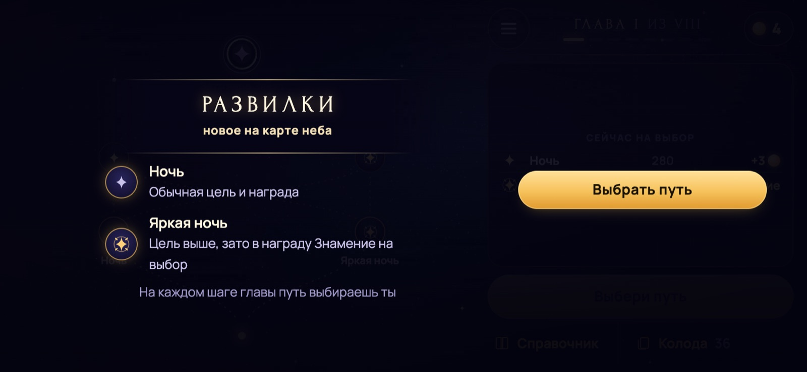
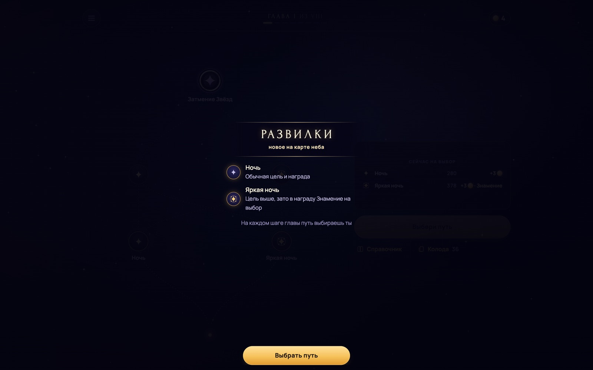
CПодсказка у развилки · рекомендую
Подсказка из первых забегов: плашка с «Понятно» и золотая рамка вокруг двух звёзд, между которыми выбирать. Экран не темнеет, карта видна целиком, игрок сразу понимает, куда нажимать.
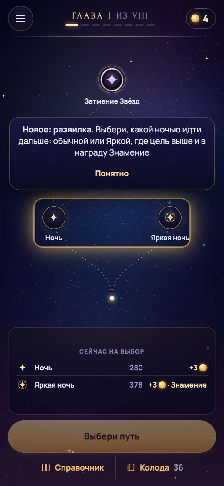
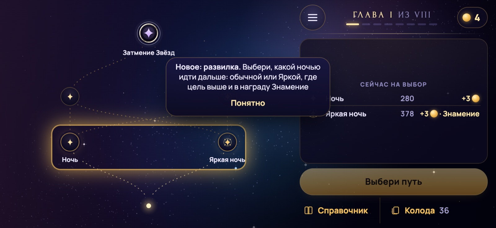
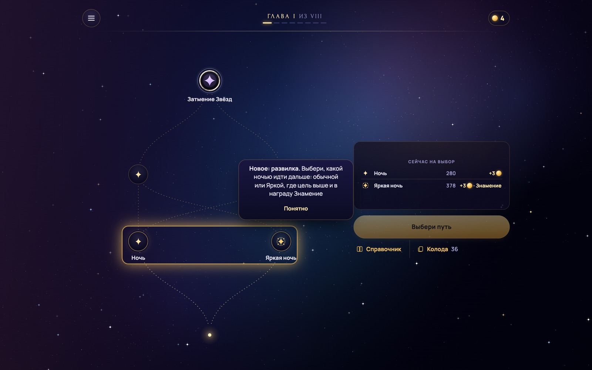
Что рекомендую
A1 + C. В момент открытия игрок получает маленький праздник и знает, чего ждать. В следующем забеге подсказка показывает выбор прямо на карте, не останавливая игру. Обе подачи уже есть в игре для других открытий, так что выглядит родным.